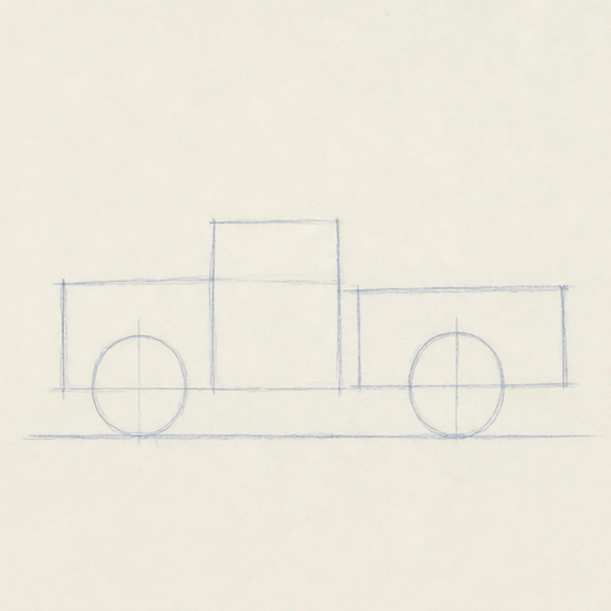
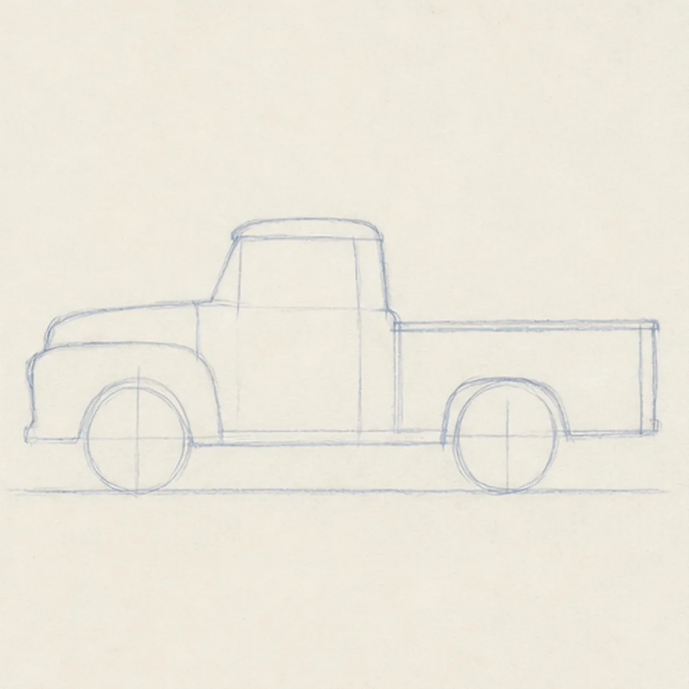
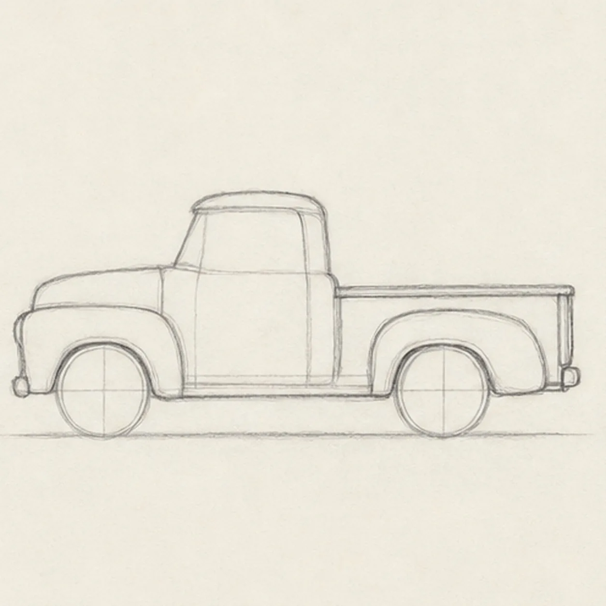
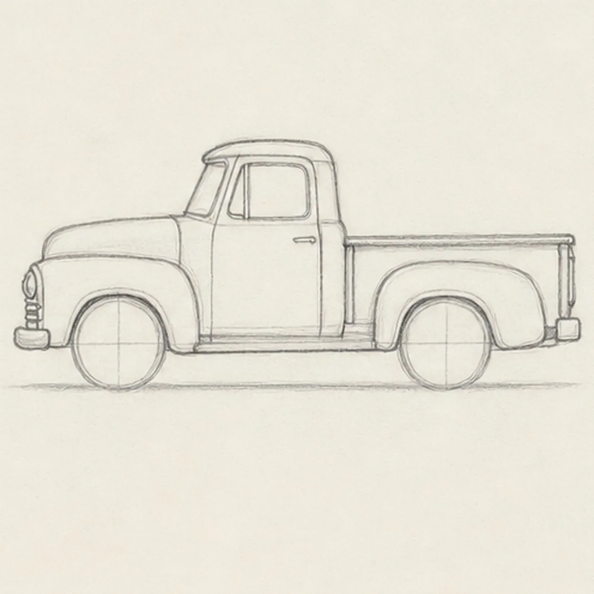
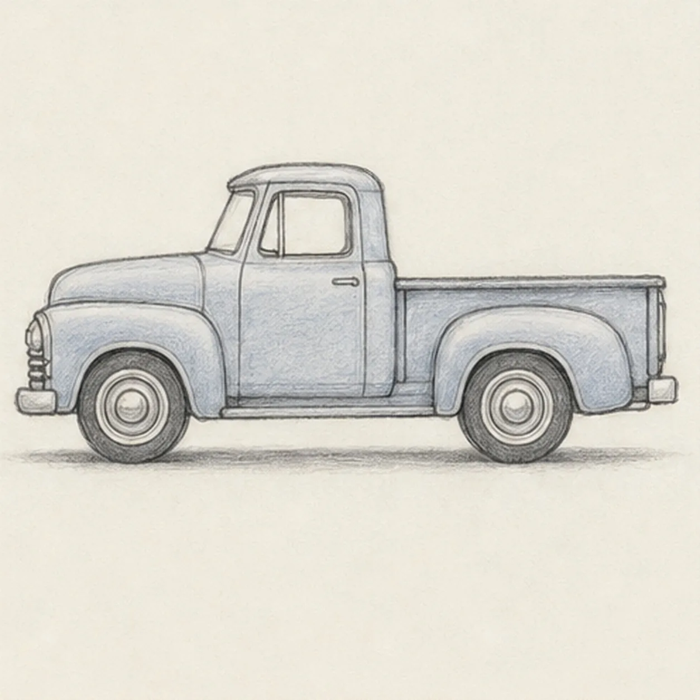

Pencil ready?
Let's draw a classic pickup truck
Treat this as one small practice round: build the subject lightly, notice the shapes, then darken only the lines that help the finished sketch.
-
01

Set the wheels and stance
Draw a long light baseline, then place two wheel circles on it with a simple cab, hood, and bed guide above them.
Sketch tip: Ghost the baseline first. If the wheels sit on the same line, the truck will feel parked instead of tilted.
-
02

Block in the truck body
Connect the guide boxes into one rough side-view truck silhouette with a hood, cab, and pickup bed.
Sketch tip: Keep the body light and boxy for now. You can round the corners after the proportions feel right.
-
03

Round the fenders
Refine the roof curve, draw rounded fenders over both wheels, and add the bed rail and tailgate edge.
Sketch tip: Compare the empty space above each tire. Matching those arcs helps the fenders look like they belong to the same truck.
-
04

Add the cab details
Add the cab window, door seam, front grille, headlights, and simple bumpers.
Sketch tip: Use short straight strokes for the grille and bumper. Small vehicle details read best when they stay simple.
-
05

Add wheels and tone
Draw the wheel hubs, add soft tire shadows, and lay in restrained blue-gray pencil shading on the body panels.
Sketch tip: Shade along the truck's length instead of scrubbing in circles. Directional strokes make the panels feel broad and solid.
-
06

Finish the pickup truck sketch
Darken the keeper contours, clarify the existing cab, bed, fenders, wheels, grille, window, blue-gray shading, and tire shadows.
Sketch tip: Stop before adding a street scene, logo, or driver. The side-view truck shape is enough to carry the lesson.